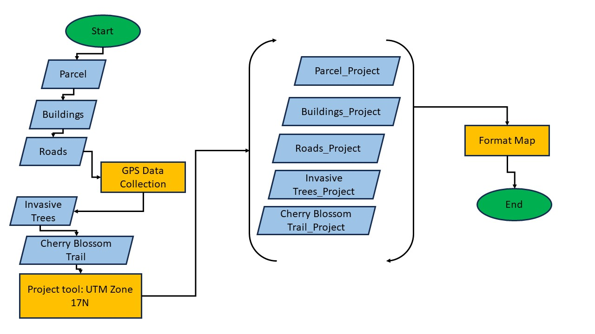

Mapping Invasive Tree Species along the Greenfield Cherry Blossom Trail in Botetourt County, VA
Adam Day | June, 2024
METHODS
To determine the prevalence of two common Virginia invasive tree species, the Autumn Olive (Elaeagnus umbellate) and the Tree of Heaven (Ailanthus altissima), along the Cherry Blossom trail in Botetourt County, VA, data was collected of each visible invasive tree species along the trail, as well as the full route traveled. Data collection for this project was achieved using a Garmin Monterra handheld GPS unit utilizing the waypoint and route functions of the unit. County data for the Cherry Blossom trail was not readily available during the time of this study. Therefore, at the entry point of the trailhead, data for the route traveled was recorded perpetually through the entire distanced traveled on foot and was completed and saved at the end of the trail. While walking this route, waypoints were recording using the GPS unit of each visible Autumn Olive or Tree of Heaven along the path. Each waypoint was number sequentially 1 through 20 followed by an abbreviated “AO” or “TH” representing the Autumn Olive species or the Tree of Heaven species, respectively. Upon completion of one full direction pass of the trail, the route recording function was stopped and saved, and no further waypoints were collected on the journey back to the starting trailhead.
After successfully collecting the GPS data from the trail, ArcGIS Pro was utilized to generate of map of the area traveled along with the data collected during this event. The Botetourt County GIS Open Data website provided free shapefile data for all parcels, buildings, and roads within the county limits. Additionally, the DNRGPS program was utilized in converting the waypoint and route data from .GPX filetype into a shapefile which would interface with the ArcGIS Pro software. Once the shapefile layers were loaded into ArcGIS Pro, each layer was projected to match the current Coordinate System of the map; NAD 1983 UTM Zone 17N. This zone was chosen for this project as it is geographically representative of the area of study. To ensure data collection of both the waypoints and route travelled were accurate, the USA NAIP Imagery: Natural Color layer was imported from ArcGIS Online and compared to the route traveled along with each waypoint recorded as a measure for quality control and quality assurance. Upon completion of a QA/QC check, the USA NAIP Imagery: Natural Color layer was hidden from the map. The map was then formatting using various ArcGIS Pro settings to ensure the map was legible and easy visualized. Each waypoint was given a vibrant color for clearer visibility, with the route given a slightly less vibrant color and pattern as to not crowd the area of study and map. County layers containing the parcels and buildings were given subtle colors with reduced transparency to shift focus to the waypoints and route data. Recorded waypoint data for each of the waypoints was renamed in the attributes table from 001 to 020, followed by the invasive tree species, for a more cohesive data structure. Figure 1 attached below represents a generalized workflow for this project.
Figure 1: Workflow Chart of Invasive Tree Species Mapping
RESULTS
A total of 20 waypoints, representing the two different invasive tree species, were collected along the route of the Cherry Blossom Trail in Botetourt County, VA. The route traveled measured approximately 0.83 miles in length. Of the 20 visible invasive tree species identifiable along the 0.83-mile-long trail, 12 were Autumn Olive and the remaining 8 were Tree of Heaven. The spread of these trees between one another were mostly proportional with the greatest number of trees group together another being 3. In no section of the trail was it apparent that the invasive trees ended or stopped being present. Thus, the range of the invasive tree species was the full length of the route walked. See Figure 2 attached below for a finished copy of the map.

Figure 2: Mapped Invasive Tree Species
REFERENCES
“Botetourt County Open Data.” n.d. Botetourt-County-Open-Data-Botetourt.hub.arcgis.com. Accessed June 16, 2024. https://botetourt-county-open-data-botetourt.hub.arcgis.com/.
Environmental Systems Research Institute (Esri). ArcGIS Pro. Version 3.0. Redlands, CA: Esri, 2022.
“Invasive Plants in Virginia.” n.d. Virginia Department of Forestry. https://dof.virginia.gov/forest-management-health/forest-health/invasive-plants-in-virginia/.